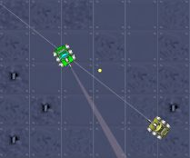

Robocode is a game. There is a playfield in which two virtual robots fight against each other. A robot can perform certain actions, like moving around, scanning the environment, shooting and turning the gun. Robocode notified a robot if a significant event occurs, including: scanned the opponent, hit a wall, hit by a bullet or hit the opponent.
To write your own robot, you can use service functions that the Robocode platform offers. These service functions are plain Java methods. In the end, you write a Java class that represents your robot. Here is a screenshot of a Robocode battle:

It is also possible that more than two robots compete against each other, but we are more interested in the basic principles and skip that for simplicity.
With JGAP 3.0, the so-called Genetic Programming (GP) has been introduced. GP allows to write programs that conform to a specified syntax. Each program can the be executed and measured by a fitness function.
It is also possible producing Java code with JGAP. Simply put, you just let the used GP-commands return a String result. The String result represents a specific and valid Java command.
How that works is impressively demonstrated by Javier Meseguer and Enrique D. Martí. Their implementation uses JGAP to create an aspirant robot, test its fitness by competing against a strong opponent, evaluate the results of the virtual battle, and then do further evolutions. They also extended some Robocode base classes to make things work better. A very nice feature is the graphical display from Robocode to visualize the battles of the evolved robots against its opponent.
Please do the following:
Download RobocodeJGAP version 0.3 (contribution by Javier Meseguer and Enrique D. Martí, strongly extended by Klaus Meffert with help from Robocode's all-hands-person Flemming N. Larsen).
Extract the Robocode example into a folder of your choice.
Care that you have Java version 5 or 6 installed as JDK (Java Development Kit), a JRE (Java Runtime Environment) is not enough. Care that your path variable is set appropriately.
Start the example by running of the provided batch files (.bat) respectively the corresponding commands necessary on Linux systems. Let the example run for some minutes. It may take some time until a good solution is found. Please notice: Don't place the files in a directory that contains spaces or special characters. This may cause problems with Java security.
The battle is undertaken by the currently evolved robot. You can turn on the graphical display by adding the "-gui" option in the previous step at the end of the command in the batch file. It takes some time until the GUI appears as it is quite time-consuming and is just there for demonstration purposes. Otherwise you can see the evolution by examining the log messages.
When looking at the provided batch files: The command-line parameter "-enemy" lets you specify an individual opponent for your robot to compete with. After the "-enemy" option you have to give the name of your class, e.g. "myrobots.MyRobot" for class MyRobot that resides in subdirectory myrobots. In the above call, Aspirant3285 is used.
By looking in the robots/jgap subfolder you can see the robot's source code generated with JGAP (file: Aspirant.java - click on link for sample code evolved).
As for every individual robot evolved the Java compiler has to be invoked, computation may take some time. In the future the JGAP Grid will enable to compute such things distributedly in a LAN and/or WAN.
Feedback is very welcome!
It is possible using several options to control how RobocodeJGAP evolves robots. These options are:
| -enemies <filename> |
The filename given defines a test file. Each line contains the full name of an enemy to fight against. A sample content of such a file could
be (2 lines shown! No empty line):
--- begin after this line: It is important to have the referenced robots available to RobocodeJGAP. Thus, they have to be under the robots directory. Also see -battleAll |
| -enemy <robot> | Specifies a single enemy robot. Full robot name must be given, e.g. sample.TrackFire |
| -battleAll |
Only in conjunction with -enemies. If given, the robot to be evolved
battles against all robots from -enemies in one round. Then, the
score is the average of all fights in the round.
If the option is omitted, in each round a single opponent is chosen randomly from the list of opponents given with -enemies. |
| -advanced |
The evolved robot extends the AdvancedRobot class. Thus, advanced
commands can be used.
If omitted, the ordinary Robot class is extended. Not all commands are available. |
| -fastTry <tries> | This is for testing purposes only. It skips invoking the Robocode engine for <tries> times. |
| -maxFitness <value> |
After a robot has been evolved with a fitness of <value> or
higher, the program stops.
If option is missing, a default of 15000 is used. |
| -minFitness <value> |
Only robots with a fitness value of <value> or higher are
dumped to a file on disk.
If option is missing, a default of 500 is used. |
| -maxGenerations <value> | Maximum number of generations after which computation will be stopped (hard exit). |
| -maxDepth1..4 <value> |
Maximum depth of sub program i, with i =
|
| -roundsStart <value> | For the first generations (at the moment 15) only <value> rounds are executed in a single battle. This is to speed up computation by gaining faster preliminary results. |
| -roundsMature <value> |
After the first generations (see above) <value> rounds are
executed in a single battle. For your information: In RoboRumble
35 rounds are used, which is quite a lot.
Also see -adaptRounds |
| -adaptRounds <value> | If this option is given, in any case the number of rounds from option -roundsStart is battled. The only exception is f the fitness value determined with the battle is <value> or higher. Then, and only then the number of rounds from option -roundsMature is battled. |
| -noProgOutput | If given, no intermediary code is printed to the console/log. Intermediary code is such that is not output as a new best solution. Using this option makes the log more readable but less detailled. |
| -continue <filename> |
Continues evolution by reading in a previous state from file <filename>.
Also see -save |
| -save <filename> |
Persists the state of evolution every 10 rounds to file <filename>.
Also see -continue |
The options are case-insensitive. Therefore it does not matter if you write -noProgOutput or -noprogoutput.
A lot of people asked for the source code of RobocodeJGAP. Normally, I don't give it away due to the following reasons:
1) JGAP had to be adapted and extended a lot to play together with RobocodeJGAP.
2) The original RobocodeJGAP version from Javier and Enrique was strongly extended in order to get better results.
3) Keeping RobocodeJGAP up-to-date is time-consuming.
4) It is always paramount to give the best support possible. This is only possible if the number of requests does not get too high.
5) JGAP itself as the major component is open source. Really a lot of effort was put into JGAP and RobocodeJGAP as well. In the last time, there was not much code contribution from other people. It's hard keeping up with two time-comsuming open source projects besides a regular job, so RobocodeJGAP currently is not open source, but JGAP is.
6) RobocodeJGAP is complex and is in a long-lasting beta-stage. The point of ending beta is defined as the time when RobocodeJGAP is able to evolve really competitive robots.
For these tasks, I invested a lot of my spare time. No one helped with that, although there were some offers which didn't get reality (meaning additionl effort). So I decided to only give the code to people donating at least 20 Euros to JGAP. If you donated and want to receive the source code of RobocodeJGAP, please send a short note after donating, using the email address you want to get a reply to.
Thank you for your understanding.
Copyright © 2005-2011 Klaus Meffert (with great support from Javier Meseguer). GNU free documentation license
[JGAP Home]